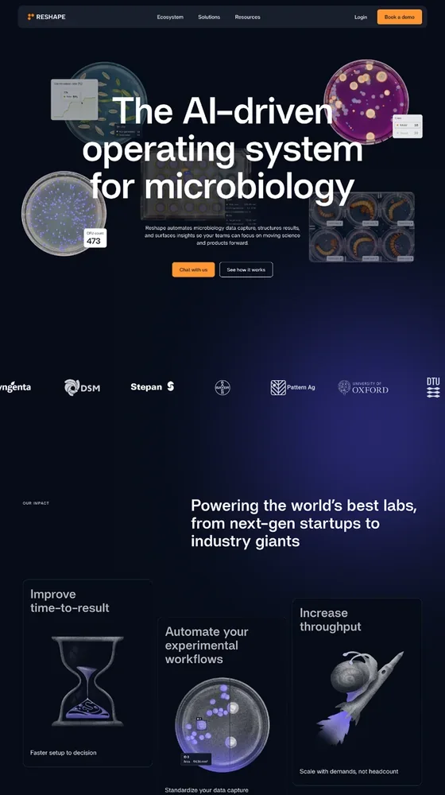
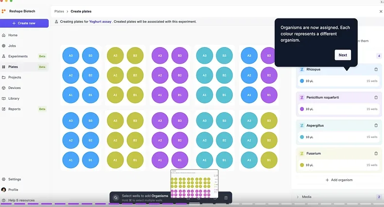
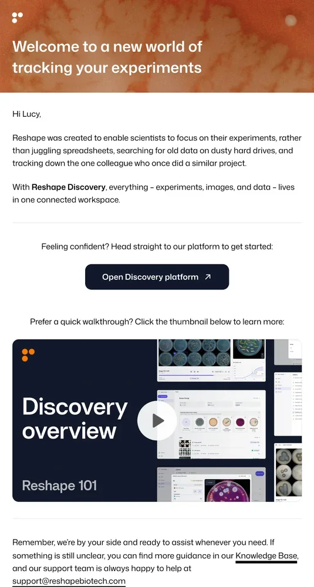
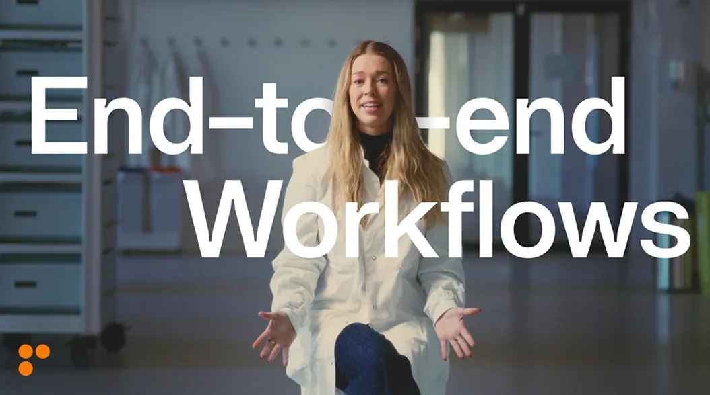
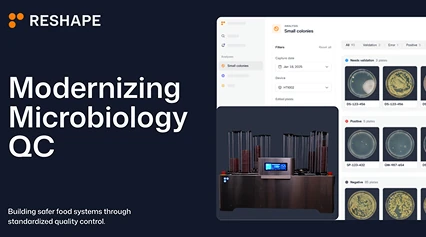

I’m a product marketer who turns customer insight into positioning, launches and onboarding.
I’ve spent 9+ years at Pleo, Veo and Reshape Biotech, including two roles as the first product marketing hire. I’m looking for a senior product marketing role in Copenhagen.
- 9+ years in B2B SaaS
- 2× first product marketing hire
- 20+ launches led at Reshape, all tiers
- ~$0.5M pipeline from one launch’s attendees

Launching the robot
I led product marketing for Reshape’s launch into quality-control labs: the message, sales training, website, videos, a live launch event and four email campaigns.
In the weeks after the launch, companies that attended the event accounted for ~$0.5M in new pipeline.
Read the case studyWhat the work looks like
Examples of my positioning, launch, onboarding, creative and sales-enablement work at Reshape Biotech. Open a card to see the pieces, and click any image to enlarge it. My work at Pleo is told in the case studies.
Reshape Biotech · Positioning and messagingPositioning & messaging
I rewrote Reshape’s website messaging to focus on what the product changes for the lab.

Positioning & messaging
I rewrote Reshape’s website messaging to focus on what the product changes for the lab.

The old and new homepage, and the shift behind them. The full positioning, messaging and audience documents are internal, so the core of them is written out here instead.
- Before
- “Automate your visual experiments.” It led with what the hardware does.
- After
- “The AI-driven operating system for microbiology.” It leads with the role Reshape plays in the lab.
- For quality-control labs
- Time saved on every test, accurate data, and a full trail of every sample when an auditor asks where an error happened.
- For companies with labs in several countries
- The same quality-control process everywhere, monitored remotely, without flying staff out.
Led with automating visual experiments and the hardware itself.
Leads with Reshape as the operating system for microbiology, then what it improves.
Reshape Biotech · Feature launchProduct launches
I led product marketing for 20+ launches at Reshape, from small updates to the biggest releases.

Product launches
I led product marketing for 20+ launches at Reshape, from small updates to the biggest releases.

One example: Experiments, a feature that takes scientists from hypothesis to conclusion in one place, from plate design through imaging and analysis. These are the places a user met it, from the first tooltip to the help article.
Points existing users to the new feature where they already work.
Explains what Experiments does before there is anything in it.
A step from the clickable tour through plate design.
The announcement to customers, leading with what changes for them.
A step-by-step guide with an embedded video.
Reshape Biotech · User onboardingUser onboarding
I built a five-email onboarding programme with help articles and video guides for newly invited users.

User onboarding
I built a five-email onboarding programme with help articles and video guides for newly invited users.

Each email links to a help article with a video guide, so people can read or watch their way into the product.
The first of five emails, with a short way in and a video thumbnail.
The Reshape 101 series: one short video per step.
Starting a new job, the second step in the programme.
Reshape Biotech · Campaign videoCreative production
I wrote scripts and created mood boards for five campaign videos, working with a videographer and our designers.

Creative production
I wrote scripts and created mood boards for five campaign videos, working with a videographer and our designers.

How one of them came together, from script to finished film.
Scene by scene, with the spoken lines and the shots to film.
The look and references agreed with the videographer.
Matching on-screen software to what happens at the lab bench.
End-to-end workflows, the finished campaign video.
Reshape Biotech · Sales enablementSales enablement
I built a sales resources hub with decks, one-pagers and product guides, used by everyone in the commercial teams, around 15 people.

Sales enablement
I built a sales resources hub with decks, one-pagers and product guides, used by everyone in the commercial teams, around 15 people.

A few of the pieces: slides from the quality-control sales deck, product guides and one-pagers.
Opens on the customer’s goal: modernising microbiology quality control.
One analysis standard across a company, the core value for QC buyers.
For customers with labs in several countries.
Printable guides for research and development (R&D) and QC customers.
Short leave-behinds for different use cases.